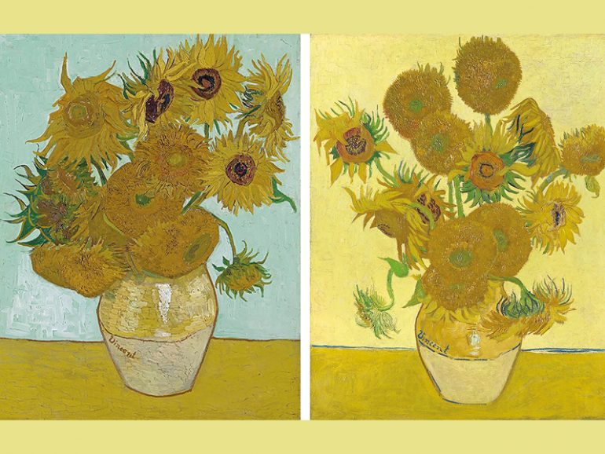
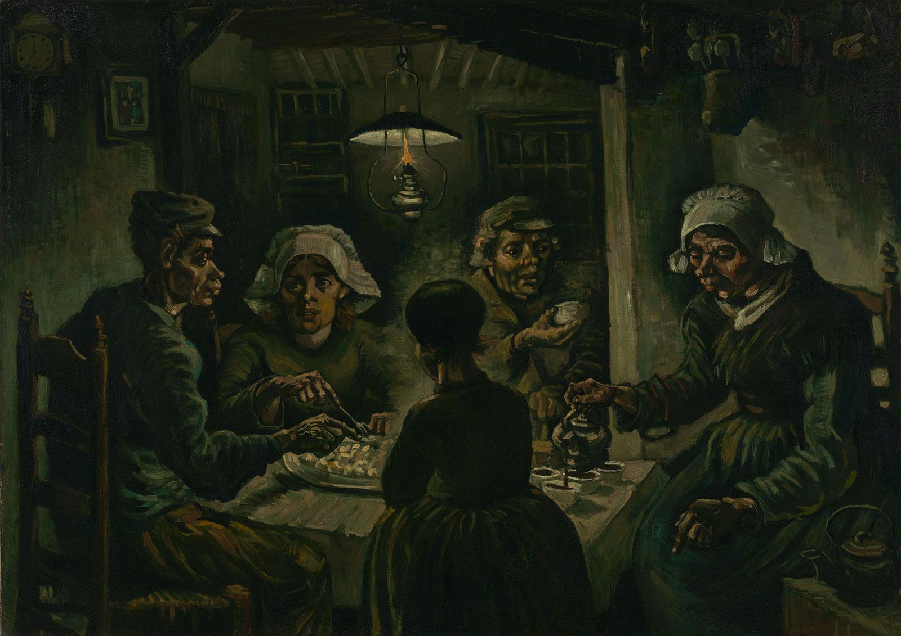

|
Woman with a Parasol – Madame Monet and Her Son, kadang-kadang dikenal sebagai The Stroll
adalah lukisan minyak di atas kanvas karya Claude Monet dari tahun 1875. |
| Lukisan terkenal ini, Impression, Sunrise, diciptakan dari sebuah pemandangan di pelabuhan Le Havre. Monet menggambarkan kabut, yang memberikan latar belakang yang samar pada karya yang berlatar di pelabuhan Prancis tersebut. Warna jingga dan kuning kontras dengan kapal-kapal gelap, di mana hanya sedikit, jika ada, detail yang langsung terlihat oleh penonton. Karya yang mencolok dan jujur ini menunjukkan perahu-perahu kecil di latar depan yang seolah terdorong oleh arus air. Hal ini, sekali lagi, dicapai dengan sapuan kuas terpisah
yang juga menampilkan berbagai warna yang "berkilauan" di laut. |
. |
 |
Berbagi ketenangan taman buatan dengan penikmatnya.
Lukisan ini menjadi kilasan momen singkat yang dialami Monet di taman Giverny-nya. |
 |
The Starry Night adalah lukisan cat minyak karya pelukis pasca-impresionis Belanda, Vincent van Gogh, yang dibuat pada Juni 1889 dari kamar suakanya di Saint-Rémy-de-Provence, Prancis. Karya ikonis ini menampilkan langit malam yang ekspresif dan berputar-putar, dipenuhi sapuan kuas yang dinamis dan tebal, bulan sabit yang bersinar, dan bintang-bintang yang bersinar. Di bawahnya, sebuah desa yang tenang dan ideal dengan menara gereja yang tinggi tampak kontras dengan langit yang bergejolak, sementara pohon cemara yang bagai api mendominasi latar depan, menghubungkan dunia duniawi dengan surga. Lukisan ini diciptakan dari ingatan dan imajinasi, bukan pengamatan langsung, dan menggabungkan unsur-unsur dari lingkungannya dengan emosi dan referensi sejarah seninya.
Lukisan ini disimpan di Museum of Modern Art (MoMA) di New York City. |
| SunFlower Van Gogh adalah seri lukisan still life yang terkenal, terutama dikenal karena karya-karyanya yang dibuat di Arles pada tahun 1888 dan 1889, yang menggambarkan rangkaian bunga matahari dalam vas. Lukisan-lukisan ini melambangkan rasa syukur, persahabatan artistik, dan vitalitas alam. Van Gogh bertujuan untuk menciptakan karya-karya yang semarak dengan variasi warna kuning, dan seri
ini memiliki tempat khusus dalam seninya, dengan satu lukisan yang dibuat untuk temannya, Paul Gauguin. |
. |
|  |
The Potato Eaters adalah lukisan cat minyak karya Vincent van Gogh tahun 1885 yang menggambarkan sebuah keluarga petani yang berbagi makanan sederhana berupa kentang di bawah cahaya lampu. Dilukis di Nuenen, Belanda, Van Gogh bermaksud menjadikannya sebagai karya besar dan ambisius pertamanya untuk membuktikan dirinya sebagai pelukis figur, menekankan kerasnya dan autentisitas kehidupan petani melalui warna-warna gelap dan bersahaja serta sapuan kuas yang kasar. Meskipun Van Gogh menganggapnya sukses, lukisan itu menuai kritik karena anatomi yang tidak sempurna dan palet warna yang gelap.
Kini, The Potato Eaters merupakan karya terkenal di Museum Van Gogh di Amsterdam. |